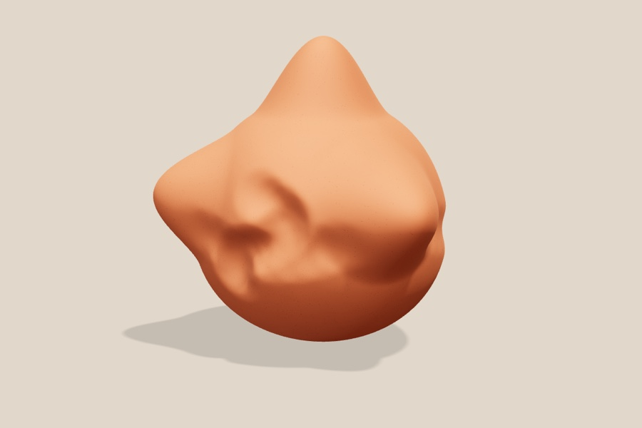
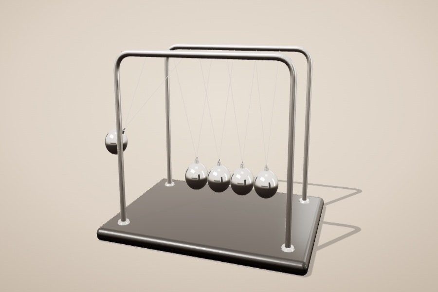

No lessons and no goals: just toys to squish, pull, swing and fidget with. Each one tries hard to feel like the real thing, so the clay gives way under your finger and the steel balls clack. They run live in your browser, on a phone or with a mouse, and use as many fingers as you've got.
It's a sister site to VisualStims, for looking at brain science, and SoundBites, for things to play and listen to.
Things to touch
1 Lump
2 Clack